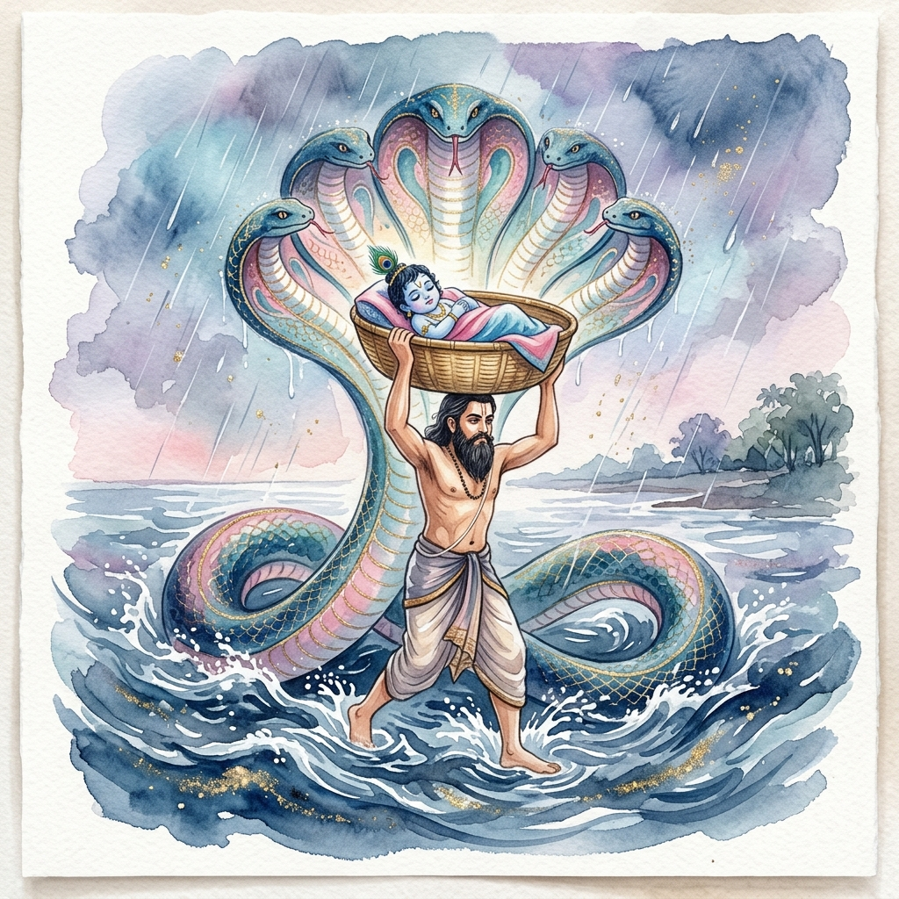
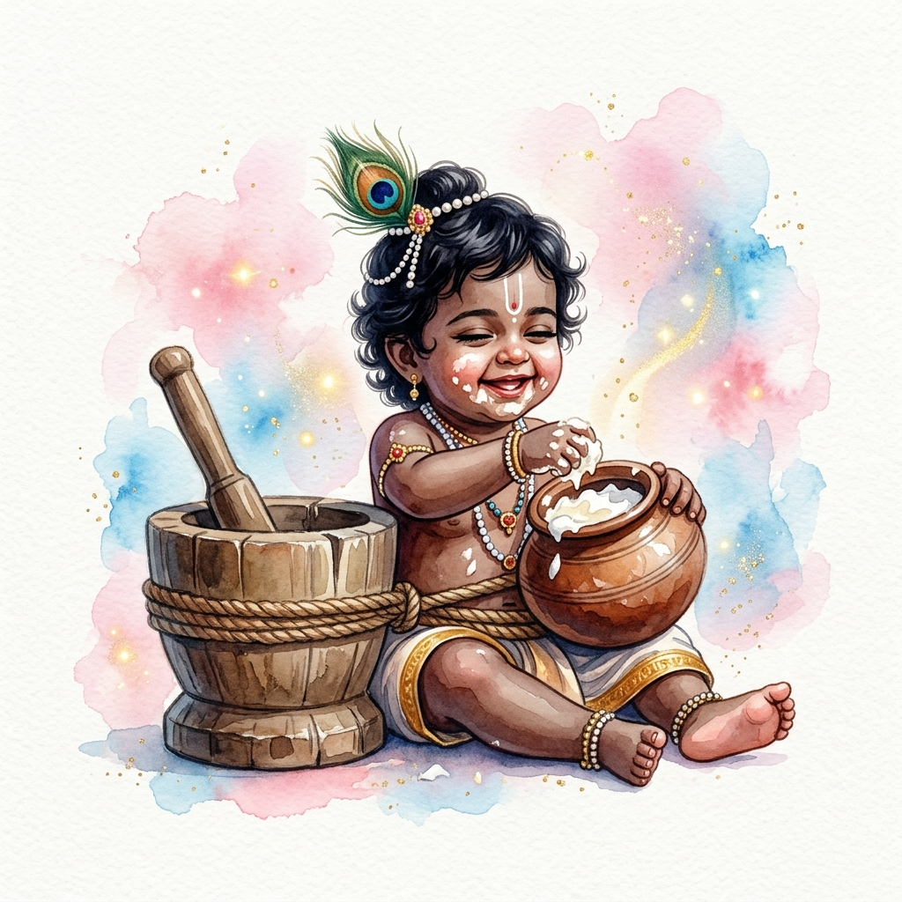
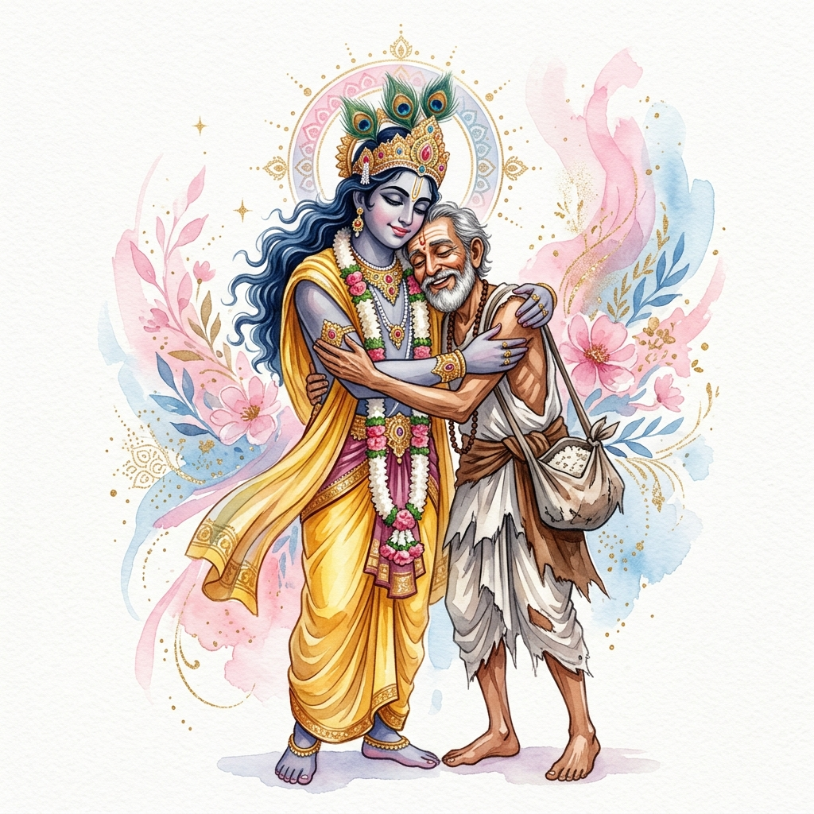
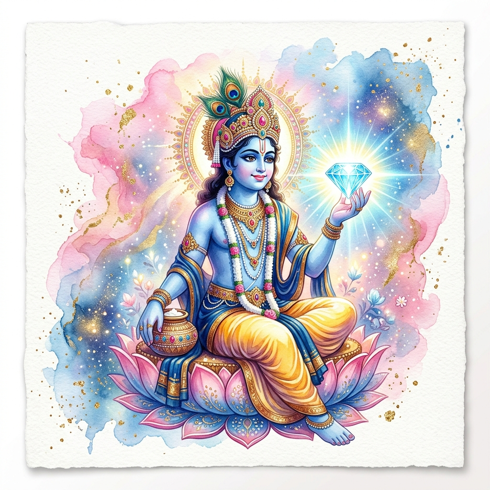

Vasudeva Crossing the Yamuna
Vasudeva carries baby Krishna in a basket across the raging Yamuna, shielded by Ananta Shesha.
Read MoreDivine tales that transform the heart and awaken the soul.
जब यमुना नदी में कालिया नाग ने अपना विष फैलाया, तब बाल कृष्ण ने यमुना में कूदकर कालिया के फन पर नृत्य किया। यह लीला दिव्य साहस और करुणा की कहानी है।
When the serpent Kaliya poisoned the waters of the Yamuna, young Krishna leapt into the river and danced upon Kaliya's hoods – a story of divine courage, compassion, and the triumph of love over fear.
This leela teaches us that no matter how poisonous our material attachments may be, Krishna can dance upon them and liberate us.
Read Full Story
Vasudeva carries baby Krishna in a basket across the raging Yamuna, shielded by Ananta Shesha.
Read More
How Mother Yashoda bound the supreme Lord of all universes with the ropes of pure love and devotion.
Read More
How young Krishna subdued the giant venomous serpent Kaliya and danced upon his hoods, purifying the Yamuna.
Read More
When Lord Krishna lifted Govardhan Hill on His little finger to protect the residents of Vrindavan from Indra's wrath.
Read More
Krishna lovingly accepts a humble offering of chipped rice from His poor childhood friend Sudama.
Read More
Krishna's quest to recover the Syamantaka jewel, demonstrating His truthfulness and divine prowess.
Read More